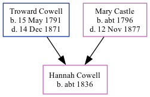

Hannah Cowell c1836 -
[ Home ] | [ Calendar ] | [ Surnames Index ] | [ Family History ]The child of Troward Cowell (an agricultural laborer) and Mary Castle, Hannah Cowell, the three times great-aunt of <a href="I1.html">Nigel Horne</a>, was born in Wingham, Kent, England <i>c.</i> 1836<span class="citation">1,2,3</span> and baptized there on Jun 25, 1837.</p><p>Throughout her life, she lived at Wingham Well in Wingham in 1841<span class="citation">1</span> and on Jun 6, 1841<span class="citation">4</span>; and at Old Farm House in Wingham in 1851<span class="citation">2</span> and on Mar 30, 1851<span class="citation">5</span>.
Parents
- Troward was born on May 15, 1791
- Mary was born c. 1796
Citations
- 1841 England Census Online publication - Provo, UT, USA: The Generations Network, Inc., 2006.Original data - Census Returns of England and Wales, 1841. Kew, Surrey, England: The National Archives of the UK (TNA): Public Record Office (PRO), 1841. Data imaged from the National
- 1851 England Census Online publication - Provo, UT, USA: The Generations Network, Inc., 2005.Original data - Census Returns of England and Wales, 1851. Kew, Surrey, England: The National Archives of the UK (TNA): Public Record Office (PRO), 1851. Data imaged from the National
- England & Wales, FreeBMD Birth Index, 1837-1915 Online publication - Provo, UT, USA: The Generations Network, Inc., 2006.Original data - General Register Office. England and Wales Civil Registration Indexes. London, England: General Register Office. © Crown copyright. Published by permission of the Cont
- 1841 England, Wales & Scotland Census - Findmypast (was age 4 and the daughter of the head of the household)
- 1851 England, Wales & Scotland Census - Findmypast (was age 15 and the daughter of the head of the household)
Media
1841 England, Wales & Scotland Census - GBC-1841-0013985846
Family Tree
Generated by Ged2Site. Last updated on Jul 20, 2025